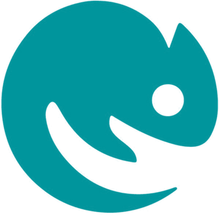

O cuidado e saber de quem também os ama.
Somos o Grupo do meu melhor amigo: consultórios veterinários onde cada animal é tratado como o melhor amigo de alguém.
Ligue ao consultório mais perto
Um veterinário de família para o seu melhor amigo
Não acreditamos no veterinário distante, de bata branca e poucas palavras. Queremos estar perto do animal e de quem cuida dele, criar uma relação de confiança e responder sem pressa a qualquer dúvida. Essa proximidade ajuda o tratamento e traz mais tranquilidade a quem espera.
Os nossos melhores amigos
Cães, gatos, coelhos, aves e outros exóticos: todos são recebidos com o mesmo carinho.


Onde estamos
Três unidades, o mesmo cuidado. Escolha a mais perto de si.



Também temos a ExoticVets. Veterinário de exóticos, junto ao consultório de Loures e também ao domicílio.
Conhecer a ExoticVetsO que dizem de nós
Opiniões deixadas no Google por quem nos confia o seu melhor amigo.
Recomendo muito! É sem dúvida um excelente consultório veterinário com uma equipa maravilhosa! Super atenciosos, grandes profissionais e tratam muito bem dos patudos. A minha coelha foi tratada pelos melhores.
A melhor clínica no Pinhal Novo, ótimos como veterinários e pessoas, atenciosos e genuinamente preocupados com o bem-estar dos animais. O meu cão Fofinho foi lá tratado e recebeu todo o amor possível. Obrigado.
Ótimo atendimento, a doutora explica tudo perfeitamente e sempre levou em conta o orçamento limitado e o bem-estar do animal.
Equipa muito humana e empática, dotada de muito profissionalismo! ❤️